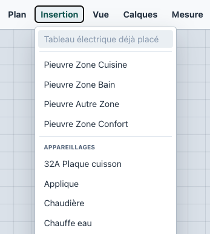
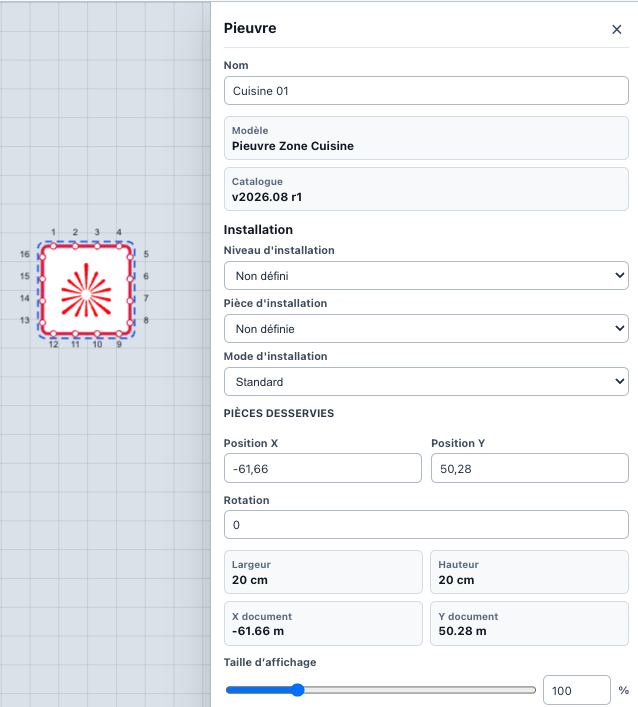

Avant de commencer
Terminez d'abord le Guide 1 — Bien démarrer. Votre plan doit être importé, mis à l'échelle, associé aux paramètres techniques du chantier, équipé du tableau électrique et sauvegardé.
Guide utilisateur 2
Construisez le plan électrique manuellement, en positionnant les pieuvres CPREYCONNECT, les appareillages, puis les affectations nécessaires.

Terminez d'abord le Guide 1 — Bien démarrer. Votre plan doit être importé, mis à l'échelle, associé aux paramètres techniques du chantier, équipé du tableau électrique et sauvegardé.
Avant de positionner les équipements, vérifiez l'organisation du chantier en niveaux et en pièces depuis le panneau Niveaux et pièces….
Créez les niveaux nécessaires, par exemple Sous-sol, RDC, Étage 1 ou Étage 2. Créez ensuite les pièces associées : Cuisine, Salon, Séjour, Chambre, Salle de bain, WC, Cellier, Garage, ou toute pièce utile au chantier.
Cette organisation permet d'identifier précisément l'emplacement des différents équipements.
Dans Insertion, choisissez le modèle correspondant à la zone à équiper, puis cliquez sur le plan pour positionner la pieuvre.
Les modèles apparaissent dans l'ordre métier suivant : Pieuvre Zone Cuisine, Pieuvre Zone Bain, Pieuvre Autre Zone, Pieuvre Zone Confort.
Une pieuvre doit être installée dans un emplacement accessible, discret, compatible avec le passage des gaines et permettant de desservir efficacement les pièces concernées.
Après avoir positionné une pieuvre, sélectionnez-la et vérifiez ses propriétés : nom, modèle, catalogue, niveau d'installation, pièce d'installation, mode d'installation, pièces desservies, position, rotation, dimensions et taille d'affichage.

Positionnez précisément la pieuvre en utilisant le zoom. Lorsque son emplacement est définitif, verrouillez-la si nécessaire afin d'éviter tout déplacement accidentel.
Insérez les appareillages électriques depuis la section Appareillages du menu Insertion. Cette liste est affichée par ordre alphabétique pour faciliter la recherche.
Sélectionnez le type souhaité, puis cliquez à son emplacement sur le plan. Vous pouvez notamment positionner des éclairages, interrupteurs, prises, prises spécialisées, équipements techniques, volets roulants, fils pilotes et autres appareillages disponibles dans CPREY DRAW.
Après insertion, utilisez le zoom pour ajuster la position de chaque appareillage. Vérifiez également ses propriétés, notamment lorsqu'il est installé en hauteur ou nécessite une information particulière de pose.
L'objectif est que la position représentée corresponde le plus précisément possible à l'implantation prévue sur le chantier.
Certains équipements physiques peuvent correspondre à plusieurs fonctions électriques. CPREY DRAW permet de regrouper les éléments concernés lorsqu'ils doivent être représentés par un seul appareillage physique.
Par exemple, deux prises prévues au même emplacement peuvent être regroupées lorsque l'installation correspond à une prise double compatible.
Une fois les appareillages positionnés, affectez-les aux sorties des pieuvres correspondantes. Chaque affectation doit respecter le type d'appareillage, la fonction électrique, les possibilités de la pieuvre et les ports disponibles.
CPREY DRAW construit ainsi la correspondance entre les équipements représentés sur le plan et les sorties physiques des pieuvres CPREYCONNECT.
Contrôlez régulièrement la position des pieuvres, la position des appareillages, les pièces desservies, les affectations, les longueurs calculées et les paramètres techniques.
Sauvegardez le projet avec Projet → Enregistrer ou Projet → Enregistrer sous…, puis utilisez Projet → Enregistrer sur SmartCPREY lorsque vous souhaitez conserver une copie Cloud.
Lorsque tous les équipements sont positionnés et affectés, vérifiez le tableau électrique, les niveaux, les pièces, les hauteurs particulières, les longueurs de gaines, les éventuelles alertes, la nomenclature et l'export PDF.
{kind=link}